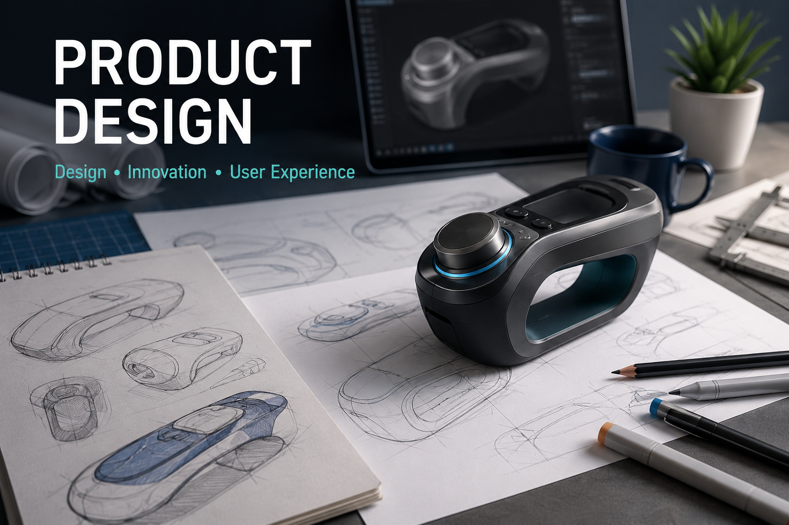
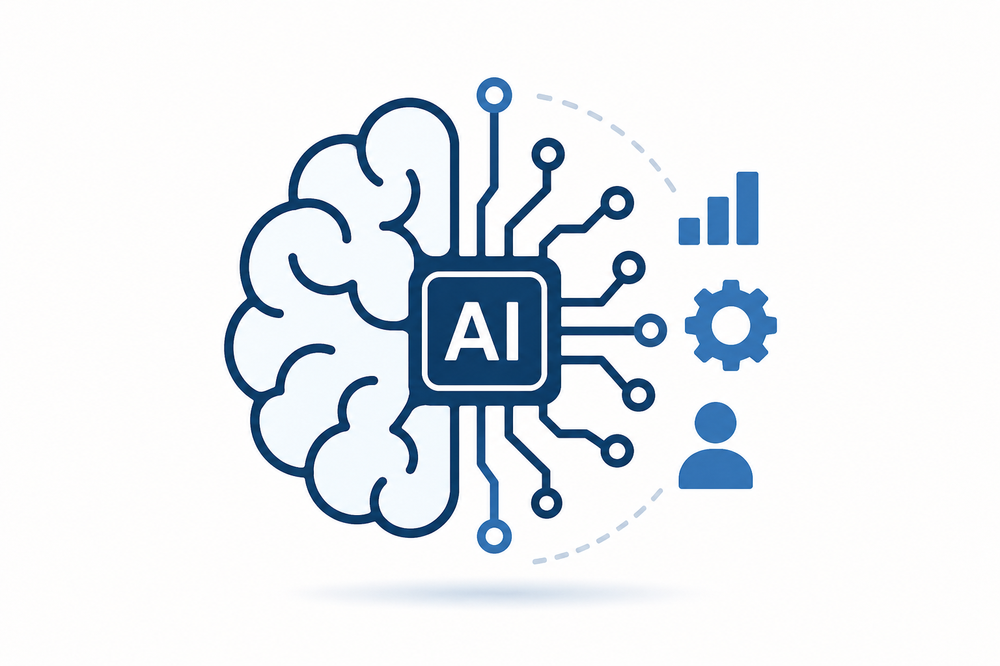
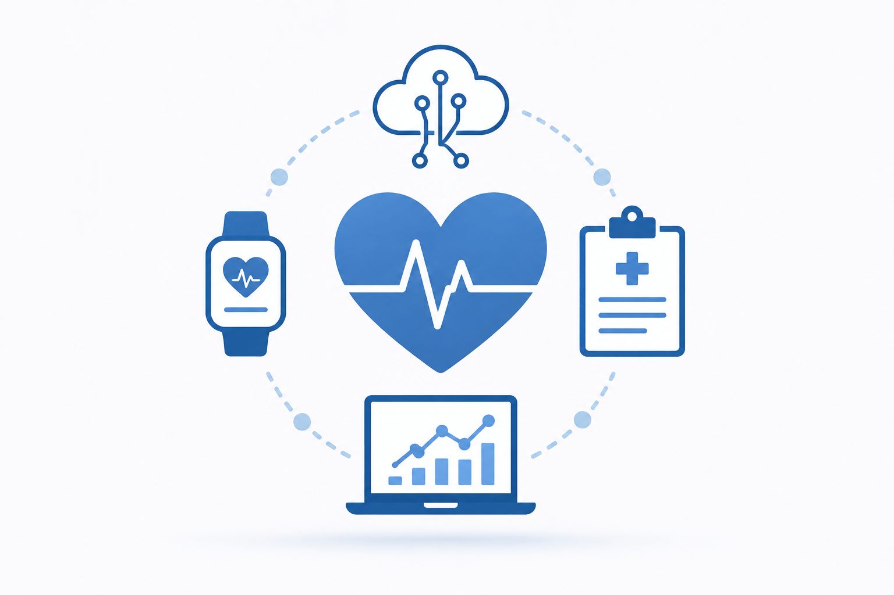

Snow Simulation (CG/Games)
Snow • DEM • GPU

Computer Games
Education • Pathfinding • XR

Human-Centered Comp. (CG/Games)
Immersive • Smart Perception • AI • XR

Cloud Animation (CG/Games)
Animation • Simulation • Lightning • GPU • AI

Real-time Rendering (CG/Games)
Polarization • Neural Shading • Selective Rasterization • AI

Product Design
Design • Human-Centered • AI

Applied Artificial Intelligence
AI • Machine Learning • Federated Learning

Smart Healthcare
Patient-centric • AI • Diagnostics • Design